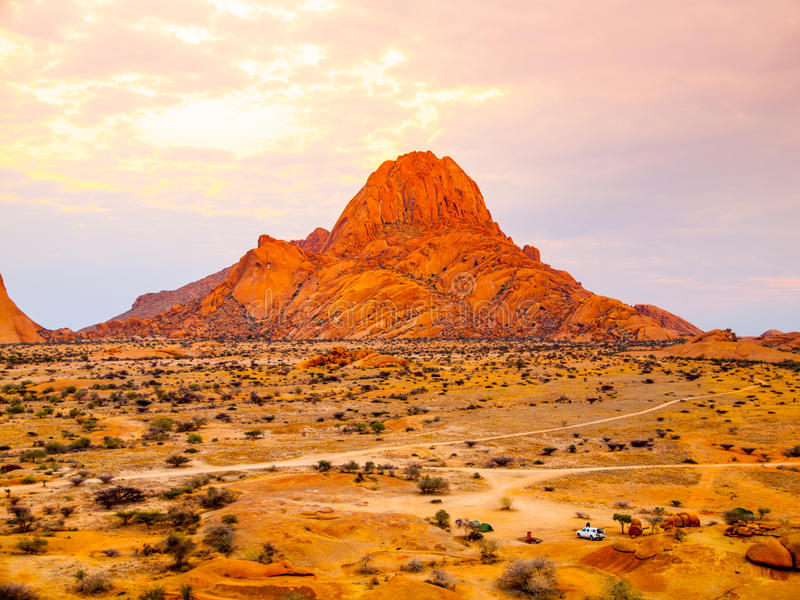
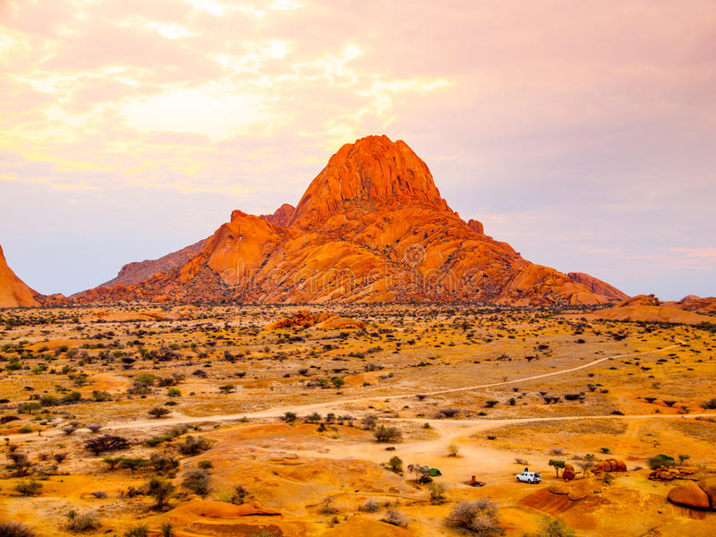

The Serengeti scheme may be a nation-state in Africa, spanning northern Tanzania. The protected space at intervals the region includes around thirty,000 km2 of land, together with the Serengeti parkland and several other game reserves. The Serengeti hosts the second citation required the largest terrestrial craniate migration within the world, that helps secure it united of the Seven Natural Wonders of Africa, and united of the 10 natural travel wonders of the planet. The Serengeti is additionally famous for its massive lion population and is one in all the most effective places to look at prides in their natural surroundings. Around seventy massive craniate and five hundred bird species ar found there. This high diversity may be an operate of numerous habitats, together with riverine forests, swamps, kopjes, grasslands, and woodlands. Blue antelope, gazelles, zebras, and buffalos ar a number of the usually found massive mammals within the region.
The Serengeti has a number of East Africa's finest game areas. Besides being best-known for the nice migration, the Serengeti is additionally known for its voluminous massive predators. The system is home to over three,000 Lions, 1,000 African leopards, and 7,700 to 8,700 noticed hyenas. The geographic region chetah are gift in Serengeti. African wild dogs square measure comparatively scarce in a lot of the Serengeti. This is often notably true in places like Serengeti parkland (where they became extinct in 1992), within which lions and noticed hyenas, predators that steal canid kills and square measure an on the spot explanation for canid mortality, square measure voluminous.